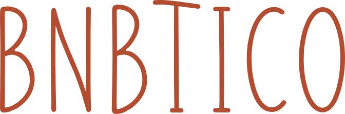

Identidad aprobada · 05.11.2026
bnbtico · logos y símbolos
Cuatro composiciones, dos símbolos y los tamaños necesarios para cada uso. Empiece por esta vista; las carpetas numeradas reúnen las exportaciones técnicas.
Logo predeterminado · transparente

Se ve el fondo de esta pantalla por detrás. El archivo no incluye ninguna placa; también el interior de las versiones con puntos es transparente.
Composiciones y colores disponibles
Iconos · tamaño real
B reforzada hasta 32 px; contorno + BT desde 48 px. Aquí se muestran a su tamaño de uso, sin ampliarlos.
Apps y perfiles
Recorte circular de perfil · 320 / 400 / 800
Sobre fotografía
Blanco transparente, sin placa. Foto existente del proyecto, usada solo para esta muestra.
Impresión
EPS y PDF vectoriales CMYK; PNG RGB de 50, 100 y 200 mm a 300 ppp. El perfil CMYK incluido es genérico y puede ajustarlo la imprenta al soporte.